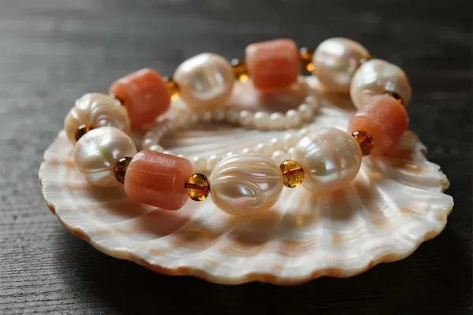

有機寶石選購與保養：嬌客的日常
有機寶石是寶石界的嬌客——買它們要懂行情，養它們要懂科學。

核心定義
有機寶石的保養鐵律：怕酸（汗液、清潔劑）、怕熱（高溫變形/老化）、怕乾（乾燥開裂）、怕紫外（褪色）、怕碰撞（硬度低）——五怕之下，有機寶石需要「無微不至」的日常。
選購要點：先確認材料身分與處理狀態（證書）、再評估品質等級（珍珠看光澤、珊瑚看紅度、琥珀看蠟感）——有機寶石的「誠實揭露」比礦物寶石更重要（處理與仿品極多）。
特徵與分類
| 寶石 | 怕 | 養護 |
|---|---|---|
| 珍珠 | 酸、汗、化妝品 | 戴後軟布擦、單獨放 |
| 珊瑚 | 酸、熱、日光 | 遠離清潔劑、避曬 |
| 琥珀 | 酒精、高溫 | 避免溶劑、防乾燥 |
| 玳瑁 | 熱、乾 | 防熱塑變形、保濕 |
日常守則：化妝噴香之後再戴（避免直接接觸）、游泳洗澡運動時取下、佩戴後用柔軟濕布輕拭（去除汗液與油脂）、存放時用軟布包裹單獨放置（避免刮傷）。
科學原理
為什麼怕酸：碳酸鈣質（珍珠、珊瑚、貝殼）遇酸溶解——汗液與清潔劑是隱形殺手；角蛋白質（玳瑁）怕強酸鹼。為什麼怕熱：樹脂類（琥珀）高溫軟化、角蛋白（玳瑁）熱塑變形。
為什麼怕乾與紫外：有機質含水分與膠質——乾燥會開裂（象牙、玳瑁）、紫外會褪色（珊瑚、珍珠）——存放要避光避燥。有機寶石的保養，本質是「延緩老化」的化學對抗。
鑑定與鑑別方法
- 購買：證書確認材料與處理
- 佩戴：化妝後再戴、活動時取下
- 清潔：軟布濕拭、不進超音波
- 存放：軟布包裹、避光避燥
- 定期：檢查鑲爪與狀態
市場行情與保養建議
行情趨勢：有機寶石的市場兩極化——天然珍珠、阿卡珊瑚、蟲珀等稀有品持續升值；常見品（淡水珠、普通琥珀）價格穩定。保育法規（象牙、玳瑁、珊瑚）重塑市場格局，合法替代品需求上升。
最終建議：有機寶石買的是「生命的故事」——買前查證書（身分）、買後勤保養（延壽）。一顆養護得宜的有機寶石，可以陪伴你幾十年。
常見誤區
超音波震動會損害有機質結構（珍珠珠層、珊瑚質地）——有機寶石只能溫水軟布，不能進超音波機。
汗液、香水、清潔劑都含酸或化學物質——有機寶石比礦物寶石「敏感」得多，化學接觸是大忌。
冷知識
化妝完再戴珍珠、回家先摘珍珠——它是「香水的天敵」，也是最需要順序感的寶石。
數百萬年的琥珀，在乾燥環境中仍會氧化變色——它的「石化」沒有結束，只是慢到人類察覺不到。
反直覺觀點
有機寶石的低維護成本是幻覺——它們的保養頻率遠高於礦物寶石。買得起，更要養得起。
正因為需要細心呵護，有機寶石才承載「傳承」的儀式感——被好好養護的珍珠，能傳三代。